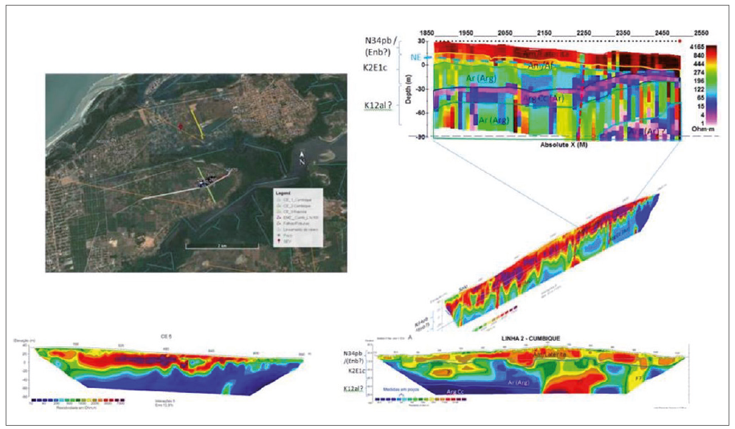

Estudos hidrogeológicos da Ilha de São Luís, MA : subsídios para o uso sustentável dos recursos hídricos : relatório final, volume I

Resumo em Português
Neste RELATÓRIO FINAL se apresenta a consolidação do trabalho, iniciado em setembro de 2016, tendo, portanto, uma duração de 36 meses de pesquisas. Durante esse período foram elaborados 9 (nove) relatórios parciais, todos sistematicamente analisados e corrigidos por representantes da Comissão Técnica de Acompanhamento e Fiscalização – CTAF, constituída por instituições públicas (órgão gestor de recursos hídricos, Universidades, e Prefeituras Municipais), empresas de saneamento e a sociedade civil. No caso deste Estudo da Secretaria de Meio Ambiente e Recursos Hídricos (SEMA), Companhia de Saneamento Ambiental do Maranhão (CAEMA), BRK Ambiental, Universidade Federal e Estadual do Maranhão (UFMA e UEMA), do Conselho Estadual de Recursos Hídricos(CERH), e das Prefeituras de Paço do Lumiar e São José de Ribamar. O relatório encontra-se estruturado da seguinte forma: VOLUME I: Caracterização do Meio Físico Engloba informações relativas à caracterização geológica da área, estudos geofísicos, geomorfologia, solos e uso e ocupação do solo na Ilha de São Luís. VOLUME II: Hidroclimatologia e Avaliação Urbana Apresenta a avaliação hidroclimática, avaliação hidrológica, balanço hídrico e estimativa das recargas naturais, com uma caracterização dos sistemas de drenagem urbana, esgotamento sanitário e de abastecimento de água de forma a avaliar o impacto da urbanização na recarga de forma a estimar as recargas urbanas. VOLUME III: Hidrogeologia Reúne toda a informação hidrogeológica, hidroquímica e isotópica levantada neste estudo, tanto em trabalhos de campo como em outros trabalhos anteriores de forma a consolidar toda a informação hidrogeológica existente necessária para embasar a gestão das águas subterrâneas. Volume IV: Ferramentas e estratégias de gestão Discute os dispositivos legais hoje existentes na Ilha de São Luís relativos aos recursos hídricos e a situação atual de sua gestão na Ilha, apresenta o sistema hídrico local, discorrendo sobre suas vulnerabilidades a contaminações e à salinização, elenca as principais fontes de contaminação presentes na Ilha, alertando para o perigo de contaminação das águas subterrâneas, para cada uma das bacias hidrográficas existentes. Discorre sobre as áreas de proteção de poços e de aquíferos, apresenta novas estimativas de recarga, avalia reservas e esboça um mapa de zonas de restrição de uso de águas subterrâneas. No final, a partir da modelagem matemática da área, faz previsões sobre possíveis cenários futuros da explotação. Volume V: Mapas em PDF na escala 1:50.000 Volume VI: Sumário Executivo